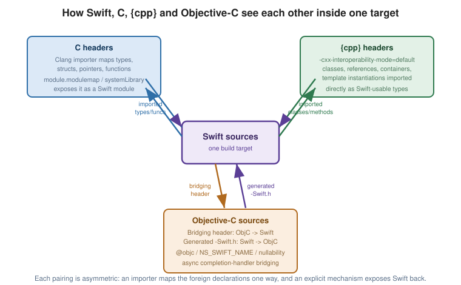

Interoperability with C, Objective-C and C++
|
This content was generated with the assistance of AI and should be verified against the official documentation before being relied on in production. |
Swift was designed from the start to sit alongside C and Objective-C, and more recently gained first-class C++ interop as well. All three follow the same underlying idea — a compiler-generated importer maps foreign declarations into their nearest Swift equivalent — but each language’s importer has its own rules, gaps, and annotations for smoothing over the differences.
The Clang Importer: C into Swift
When a Swift target imports a C header (directly, or via a bridging header — see Objective-C Interop
below), the Clang importer translates it, largely following the same conventions
Objective-C’s own importer uses for its
NS-prefixed types:
| C construct | Imported as |
|---|---|
|
|
|
|
|
A Swift struct exposing every member at the same memory offset — reading one after writing another is undefined behavior, exactly as in C. |
|
A Swift |
|
|
|
A Swift closure type, |
|
A global |
Preprocessor conditionals ( |
Resolved by Clang before Swift ever sees the header — Swift never sees the macro itself, only the branch Clang picked. |
// Point.h: struct Point { double x, y; }; double distance(struct Point a, struct Point b);
var origin = Point(x: 0, y: 0) // memberwise init, synthesized by the importer
let d = distance(origin, Point(x: 3, y: 4)) // free C functions import as free Swift functionsSee C: Structures, Unions and Type
Aliases and C: Pointers for these constructs on the C side, and
Memory Safety and Unsafe Pointers for
working with the Unsafe*Pointer family an imported C API hands back.
Module Maps and System-Library Targets in SwiftPM
A plain C header has no notion of a Swift "module" — a module map (module.modulemap) is what tells the
Clang importer which headers belong to which module and how to expose them:
// Sources/CZlib/module.modulemap
module CZlib [system] {
header "shim.h"
link "z"
export *
}// Package.swift
let package = Package(
name: "MyTool",
targets: [
.systemLibrary(name: "CZlib", pkgConfig: "zlib"), // wraps a C library already on the system
.target(name: "MyTool", dependencies: ["CZlib"])
]
)A systemLibrary target wraps a C library that is expected to already be installed (via pkgConfig, or a
providers list naming the system package manager’s package name), rather than one SwiftPM builds itself; an
ordinary .target with a Sources/<Name>/include/*.h layout works the same way for a C library that is built
from source as part of the package. See
Swift Package Manager for package targets in
general.
Objective-C Interop
| Mechanism | Purpose |
|---|---|
Bridging header ( |
Exposes chosen Objective-C headers to every Swift file in an
app target, with no |
|
Exposes a Swift declaration (or every member of a class) to Objective-C, which
requires inheriting from |
|
Renames an Objective-C declaration as seen from Swift. |
Nullability ( |
Becomes |
Lightweight generics ( |
Becomes a properly parameterized Swift collection
( |
|
Imported as |
// Objective-C: - (void)fetchUserWithID:(NSInteger)userID
// completion:(void (^)(User * _Nullable, NSError * _Nullable))completion;
let user = try await service.fetchUser(id: 42) // imported as an `async throws` function -- no completion handlerAn Objective-C API following the completion:(void (^)(Result, NSError *)) pattern is imported as an async
function automatically, unifying it with native Swift concurrency (see
Async/Await and Tasks) with no manual bridging.
Exposing Swift to Objective-C is the mirror image: a class must inherit NSObject and mark members @objc
(or @objcMembers), and the compiler emits a <Module>-Swift.h header for Objective-C files to #import.
This reference’s Objective-C Reference covers this direction in much greater depth, in particular Swift Interoperability (the bridging header and generated header mechanics, the full table of imported constructs, and mixed-language project practices) and Lightweight Generics and Nullability (the annotations that produce a clean Swift API).
C++ Interop
// Package.swift
.target(
name: "MySwiftTarget",
swiftSettings: [.interoperabilityMode(.Cxx)] // enables -cxx-interoperability-mode=default
)C++ interop is opt-in per target, via -cxx-interoperability-mode=default (or .interoperabilityMode(.Cxx)
in a SwiftPM manifest). Once enabled:
// Point.hpp: struct Point { double x, y; double distance(const Point& other) const; };
var origin = Point()
origin.x = 0
origin.y = 0
let other = Point(x: 3, y: 4) // {cpp} constructors are imported too
origin.distance(other) // member functions become Swift methods
var vec = std.vector<Int32>() // std::vector<int> imported as a Swift-usable generic type
vec.push_back(1)
vec.push_back(2)
for value in vec { print(value) } // std::vector conforms to Swift's Sequence when interop is on| C++ construct | Imported as |
|---|---|
A C++ class/struct |
A Swift struct or class exposing its public members and methods. |
References ( |
Mapped to Swift’s own parameter-passing conventions; a |
|
Usable directly from Swift, with |
C++ templates |
Only concrete instantiations actually used from Swift are imported — an uninstantiated template has nothing for Swift to bind to. |
Exposing Swift to C++ works in the same target, once interop is enabled — a C++ file can #include the
generated Swift header and call exposed Swift functions and methods directly, though (as of Swift 6.3) the
Swift-to-C++ direction supports a narrower set of Swift features than the C++-to-Swift direction does. See
C++: Templates and
C++: Containers for these constructs on the C++ side.
This reference’s C++ Reference and its own Memory Management and Smart Pointers page cover ownership and lifetime rules relevant to values crossing the boundary.
The Three References, Side by Side

For C, C++ and Objective-C in their own right — rather than as seen through Swift’s importer — see:
-
C Reference — in particular Pointers, Structures, Unions and Type Aliases, and Preprocessor and Macros.
-
C++ Reference — in particular Templates and Containers.
-
Objective-C Reference — in particular Swift Interoperability, the page this one most directly complements.
Worked Example: A C Catalogue Library Called From Swift
The previous sections list the rules; this section builds a package that follows them. ShelfTool has a C target, CCatalogue, with
a header in its include directory, and a Swift executable that imports it. SwiftPM generates the module map for the C target
automatically, so import CCatalogue is all the Swift side needs.
// swift-tools-version: 6.0
import PackageDescription
let package = Package(
name: "ShelfTool",
targets: [
.target(name: "CCatalogue"), // C sources and a public header in include/
.executableTarget(name: "shelfcli", dependencies: ["CCatalogue"]),
]
)The C header declares a struct, two functions and a callback type:
#ifndef CATALOGUE_H
#define CATALOGUE_H
#include <stddef.h>
typedef struct {
int pages;
double rating;
} CBook;
/// Sum of pages of `count` books.
int catalogue_total_pages(const CBook *books, size_t count);
/// Writes a label into `buffer` (at most `size` bytes including the NUL) and returns its length.
int catalogue_label(const CBook *book, char *buffer, size_t size);
typedef int (*catalogue_visitor)(const CBook *book, void *context);
void catalogue_visit(const CBook *books, size_t count, catalogue_visitor visitor, void *context);
#endifand the implementation is ordinary C:
#include "catalogue.h"
#include <stdio.h>
int catalogue_total_pages(const CBook *books, size_t count) {
int total = 0;
for (size_t i = 0; i < count; i++) total += books[i].pages;
return total;
}
int catalogue_label(const CBook *book, char *buffer, size_t size) {
return snprintf(buffer, size, "%d pages, rated %.1f", book->pages, book->rating);
}
void catalogue_visit(const CBook *books, size_t count, catalogue_visitor visitor, void *context) {
for (size_t i = 0; i < count; i++) {
if (visitor(&books[i], context) == 0) break;
}
}The Swift side shows the four things every C interop needs: constructing imported structs, passing arrays, getting data out through buffers and handling callbacks.
import CCatalogue
// The C struct arrives as a Swift struct with a memberwise initializer.
let books = [
CBook(pages: 412, rating: 4.5),
CBook(pages: 336, rating: 3.8),
CBook(pages: 474, rating: 4.1),
]
// const CBook * plus size_t becomes UnsafePointer<CBook> plus Int; an array passes as a pointer.
let total = books.withUnsafeBufferPointer { buffer in
catalogue_total_pages(buffer.baseAddress, buffer.count)
}
print("total pages:", total)
// char * output: give C a buffer, then build a Swift String from the bytes.
var label = [CChar](repeating: 0, count: 64)
var first = books[0]
let written = catalogue_label(&first, &label, label.count) // & passes the address of a variable
let text = label.withUnsafeBufferPointer { String(cString: $0.baseAddress!) }
print(written, text)
// A C callback is a @convention(c) closure: it cannot capture, so state travels through the context pointer.
final class Visitor { var seen: [Int] = [] }
let visitor = Visitor()
books.withUnsafeBufferPointer { buffer in
catalogue_visit(buffer.baseAddress, buffer.count, { book, context in
let visitor = Unmanaged<Visitor>.fromOpaque(context!).takeUnretainedValue()
visitor.seen.append(Int(book!.pointee.pages))
return book!.pointee.pages > 400 ? 1 : 0 // 0 stops the iteration
}, Unmanaged.passUnretained(visitor).toOpaque())
}
print("visited:", visitor.seen)swift run builds both targets and prints:
total pages: 1222
20 412 pages, rated 4.5
visited: [412, 336]-
The struct arrives with a memberwise initializer.
CBook(pages: 412, rating: 4.5)is generated by the importer, andintanddoublebecomeInt32andDouble, which is whyInt(book!.pointee.pages)converts in the callback. -
Pointers need explicit addresses. A
const CBook *parameter is imported asUnsafePointer<CBook>. An array is passed throughwithUnsafeBufferPointer, which guarantees the pointer is valid only inside the closure. Passing a single value (books[0]) is a compile error (cannot convert value of type 'CBook' to expected argument type 'UnsafePointer<CBook>'); copy it into avarand pass&first. -
Output buffers are arrays of
CChar.catalogue_labelwrote 20 characters plus the terminating NUL into the buffer, andString(cString:)read them back. C’ssnprintfguards the length, which is the pattern to copy: always pass the capacity. -
Callbacks cannot capture. A C function pointer is imported as a
@convention(c)closure, which has no context of its own. The closure above gets its state through the C API’svoid *context, which Swift sees asUnsafeMutableRawPointer;Unmanagedconverts a class reference to and from that pointer without changing its reference count. The callback returned0for the 336-page book, so the loop stopped after two items.
Pitfalls
-
The pointer from
withUnsafeBufferPointeror&variablemust not outlive the call; storing it and using it later is undefined behaviour with no diagnostic. -
C headers lack nullability and ownership information; annotate them (
_Nonnull,_Nullable) so that Swift imports precise optionals, and document who frees returned memory. -
A header under
include/is public to every client of the target; keep implementation-only declarations in the.cfile or a private header. -
String(cString:)on a buffer without a NUL terminator reads past the end; make sure C wrote the terminator, or usesnprintf-style bounded functions as above.
See Also
-
Memory Safety and Unsafe Pointers — the
Unsafe*Pointerfamily an imported C API commonly hands back. -
Async/Await and Tasks — how Objective-C completion-handler APIs import as
asyncfunctions. -
Swift Package Manager —
systemLibrarytargets and package manifests in full.